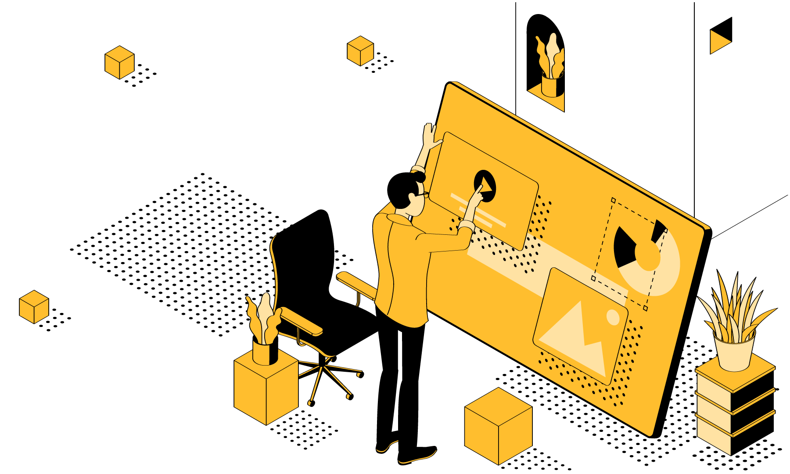
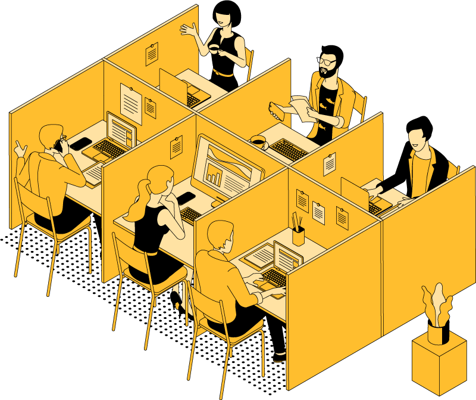

Name: Matt Byrnes
Title: UX Consultant
Working: 20 yrs
Graduated: Feb 2019
Why I took the Georgia Tech Coding Bootcamp?...
I wanted to reBoot my tech skills.
Past 5 Years of my Professional Life
Small Startups to Large Corporations
Differences in Environments, Culture, Difficulty
How to Work With Agencies
Ready for the Flashback?...
A long-long time ago... 2015
I was living what I thought was the...
"Quintessential Life of a Creative Professional"
Meaning...
Looking for work on a regular basis
Bouncing from project to project
Managing
I thought I'd only be happy in "hip" startup environments.
Meaning...
Ironic T-shirts
Foosball
Craft Beer
I thought I'd only be happy working on products for people like me.
Meaning... A guy who loves...
Ironic T-shirts
Foosball
Craft Beer
Old
Conventional
Bleak
Beige Cubicles
Unhappy People
Corporate Casual
I was sure it was not for me.
I was sure I was not for them.
A long-long time ago... Summer of 2015
Enter: Consulting Firm & Interesting Job
Title: UX Consultant / Government Contractor
Military
Health
Etc.
Client: Centers for Disease Control (CDC)
Would it be a bland corporate setting?
Answer: NO
Old corporations are getting with the times.
The want to attract young perfessionels.
Innovation Labs
Incubators
Creative Environments
I began to warm up to the idea. But first...
The Interview Process: Standard
Topic
Topic
Topic
The Clearance Process: Not Standard
Full Background Investigation
Relationships with Foregn Nationals
Allegiance to the United States
Client: Centers for Disease Control (CDC)
Project: Global Travel Application
Overview
Develop and international travel application for the organization and their specific needs.
Desire
To have a digital and more efficient system than the previous analog system.
Predecessor: None
Conventional Meetings
Formal Environment
Rehearsed Demonstrations
Time Constraints
Shadowing Sessions
Organic Environment
Casual Pace and Conversation
Yields More Accurate Research
One Year Later
Conducted Extensive Research
Created Effective Prototypes
Completed the Project Successfully
I was often told that I would receive a fulltime offer if I did a good job.
I learned the reality is not that simple.
I was upset but, in retrospect, a bit naive.
Fulltime Offer Checklist
Doing a Good Job
Budget
Workload
Indefinite Need
I did a good job and now the job was over.
I was not prepared for whatever came next.
So, I had a two-month hiatus.